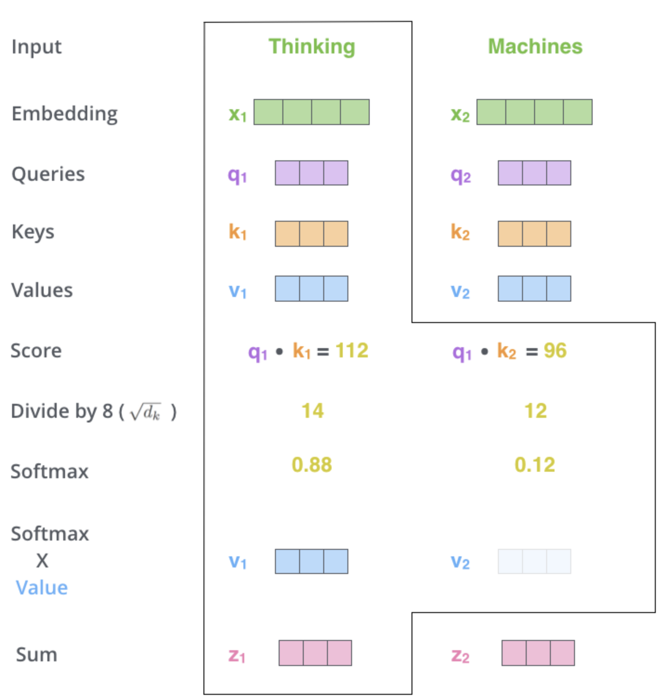
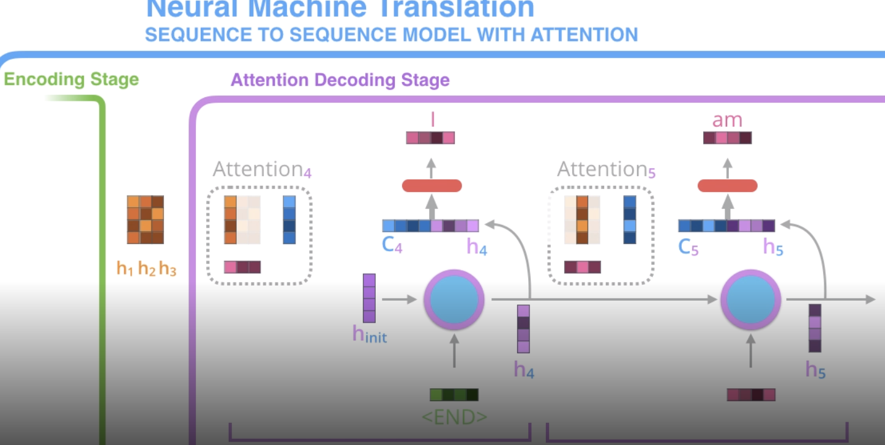

nlp
view markdownSome notes on natural language processing, focused on modern improvements based on deep learning.
nlp basics
- basics come from book “Speech and Language Processing”
- language models - assign probabilities to sequences of words
- ex. n-gram model - assigns probs to shorts sequences of words, known as n-grams
- for full sentence, use markov assumption
- eval: perplexity (PP) - inverse probability of the test set, normalized by the number of words (want to minimize it)
- $PP(W_{test}) = P(w_1, …, w_N)^{-1/N}$
- can think of this as the weighted average branching factor of a language
- should only be compared across models w/ same vocab
- vocabulary
- sometimes closed, otherwise have unkown words, which we assign its own symbol
- can fix training vocab, or just choose the top words and have the rest be unkown
- ex. n-gram model - assigns probs to shorts sequences of words, known as n-grams
- topic models (e.g. LDA) - apply unsupervised learning on large sets of text to learn sets of associated words
- embeddings - vectors for representing words
- ex. tf-idf - defined as counts of nearby words (big + sparse)
- pointwise mutual info - instead of counts, consider whether 2 words co-occur more than we would have expected by chance
- ex. word2vec - short, dense vectors
- intuition: train classifier on binary prediction: is word $w$ likely to show up near this word? (algorithm also called skip-gram)
- the weights are the embeddings
- also GloVe, which is based on ratios of word co-occurrence probs
- intuition: train classifier on binary prediction: is word $w$ likely to show up near this word? (algorithm also called skip-gram)
- ex. tf-idf - defined as counts of nearby words (big + sparse)
- some tasks
- tokenization
- pos tagging
- named entity recognition
- nested entity recognition - not just names (but also Jacob’s brother type entity)
- sentiment classification
- language modeling (i.e. text generation)
- machine translation
- hardest: coreference resolution
- question answering
- natural language inference - does one sentence entail another?
- most popular datasets
- (by far) WSJ
- then twitter
- then Wikipedia
- eli5 has nice text highlighting for interp
dl for nlp
- some recent topics based on this blog
- rnns
- when training rnn, accumulate gradients over sequence and then update all at once
- stacked rnns have outputs of rnns feed into another rnn
- bidirectional rnn - one rnn left to right and another right to left (can concatenate, add, etc.)
- standard seq2seq
- encoder reads input and outputs context vector (the hidden state)
- decoder (rnn) takes this context vector and generates a sequence
- misc papers
- Deal or No Deal? End-to-End Learning for Negotiation Dialogues - controversial FB paper where agents “make up their own language”
attention / transformers
-
self-attention layer implementation and mathematics
- **self-attention ** - layer that lets word learn its relation to other layers
- for each word, want score telling how much importance to place on each other word (queries $\cdot$ keys)
- we get an encoding for each word
- the encoding of each word returns a weighted sum of the values of the words (the current word gets the highest weight)
- softmax this and use it to do weighted sum of values

- (optional) implementation details
- multi-headed attention - just like having many filters, get many encodings for each word
- each one can take input as the embedding from the previous attention layer
- position vector - add this into the embedding of each word (so words know how far apart they are) - usually use sin/cos rather than actual position number
- padding mask - add zeros to the end of the sequence
- look-ahead mask - might want to mask to only use previous words (e.g. if our final task is decoding)
- residual + normalize - after self-attention layer, often have residual connection to previous input, which gets added then normalized
- multi-headed attention - just like having many filters, get many encodings for each word
- decoder - each word only allowed to attend to previous positions
- 3 components
- queries
- keys
- values
- attention
- encoder reads input and ouputs context vector after each word
- decoder at each step uses a different weighted combination of these context vectors
- specifically, at each step, decoder concatenates its hidden state w/ the attention vector (the weighted combination of the context vectors)
- this is fed to a feedforward net to output a word

- at a high level we have $Q, K, V$ and compute $softmax(QK^T)V$
- instead could simplify it and do $softmax(XX^T)V$ - this would then be based on kernel
- transformer
- uses many self-attention layers
- many stacked layers in encoder + decoder (not rnn: self-attention + feed forward)
- details
- initial encoding: each word -> vector
- each layer takes a list of fixed size (hyperparameter e.g. length of longest sentence) and outputs a list of that same fixed size (so one output for each word)
- can easily train with a masked word to predict the word at the predicted position in the encoding
- multi-headed attention has several of each of these (then just concat them)
- recent papers
- attention is all you need paper - proposes transformer
- Semi-supervised Sequence Learning (by Andrew Dai and Quoc Le)
- ELMo (by Matthew Peters and researchers from AI2 and UW CSE) - no word embeddings - train embeddings w/ bidirectional lstm (on language modelling)
- context vector is weighted sum of context vector at each word
- ULMFiT (by fast.ai founder Jeremy Howard and Sebastian Ruder), the
- OpenAI transformer (by OpenAI researchers Radford, Narasimhan, Salimans, and Sutskever)
- BERT - semi-supervised learning (predict masked word - this is bidirectional) + supervised finetuning
- GPT-2 (small released model, full trained model, even larger model from Nvidia)
- XLNet
- roberta
- these ideas are starting to be applied to vision cnns